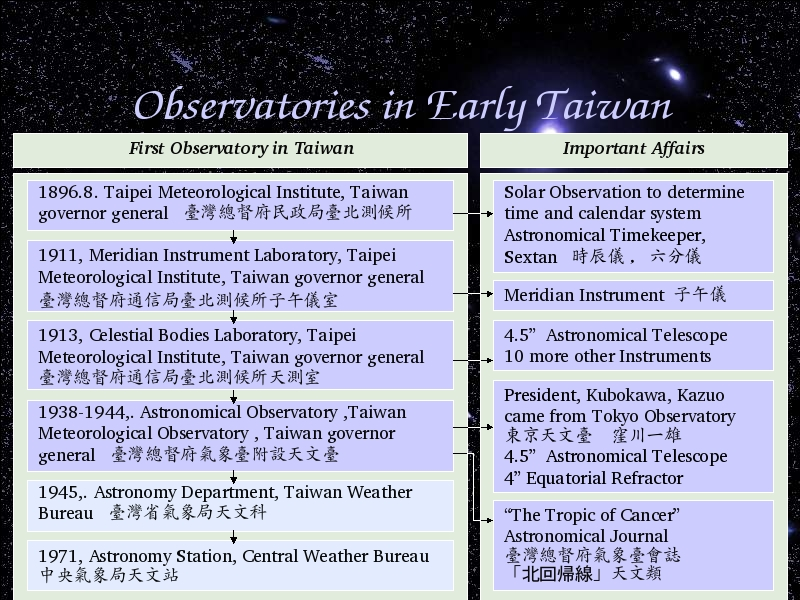

Voice Over:
OK, now we start the first observatory in Taiwan.
As we know, Japanese government took over Taiwan from 1894 to 1945.
After they took over Taiwan, 1896, August, Taiwan Governor General built Taipei Meteorological Institute.
If we look at any astronomical history in this world, we will find that the development of astronomy bases on time determine and calendar set up.
It is also the same in Taiwan.Taipei Meteorological Institute set up Sextans and Time Instrument at beginning.
1911, Taipei Meteorological Institute built Meridian Instrument Laboratory, of course they set up Meridian Instrument.
1913, Taipei Meteorological Institute built Celestial Bodies Laboratory, and set up the first Telescope in Taiwan.
4.5 inch telescope, and 10 more instruments were bought for this Laboratory.
1938, Taipei Meteorological Institute became Taiwan Meteorological Observatory, and also the first Astronomical Observatory built.
The first President of Astronomical Observatory, Kubokawa, Kazuo, came from Tokyo Observatory.
The first Astronomical Observatory set up 4.5 inch telescope, 4 inch Equatorial Refractor.
This Astronomical Observatory also published Astronomical Journal "The Tropic of Cancer."
1945, Chinese Government took over Taiwan, and Astronomical Observatory became Astronomy Department.
1971, Taiwan Weather Bureau changed to Central Weather Bureau. Astronomy Department became Astronomy Station.
The history detail after 1945 can be seen in the history of Central Weather Bureau.